本章主要讨论超定方程组与不定方程组的最小二乘解,即 的最小化,其中
的最小化,其中 .解此问题的可靠方法是通过正交变换将
.解此问题的可靠方法是通过正交变换将 约化为各种典型形式.我们在以下的讨论中主要考虑实矩阵.但容易看出,复矩阵的
约化为各种典型形式.我们在以下的讨论中主要考虑实矩阵.但容易看出,复矩阵的 分解完全可以仿照实矩阵进行.
分解完全可以仿照实矩阵进行.
 Householder反射
Householder反射
通过正交变换将矩阵约化为典型形式 (如Hessenberg形式)的典型方法是通过一系列正交变换,逐个地将矩阵列向量的某些指定分量化为 .下面我们就先讨论这一过程的两种实现:Householder反射与Jacobi-Givens旋转.
.下面我们就先讨论这一过程的两种实现:Householder反射与Jacobi-Givens旋转.
Householder反射的几何意义是取向量 关于指定超平面
关于指定超平面 的反射.
的反射. 为向量关于平面
为向量关于平面 的法线的投影,从而
的法线的投影,从而 为关于该平面的投影.因此,设
为关于该平面的投影.因此,设 是非零向量,称形如
是非零向量,称形如 的
的 矩阵为Householder反射.如果用去乘向量,则得到
矩阵为Householder反射.如果用去乘向量,则得到 是关于超平面
是关于超平面 的反射.
的反射.
利用Householder反射可将一个向量的某些选定分量变为.设给定 ,欲使沿
,欲使沿 的方向.由几何直观容易知道
的方向.由几何直观容易知道
 有一些细节需要注意:
有一些细节需要注意:
- 由于
 使得是的正倍数,故常常采用.但当接近的一个正倍数时,则会出现严重的相消.由
使得是的正倍数,故常常采用.但当接近的一个正倍数时,则会出现严重的相消.由 在
在 的情况下则可避免相消.
的情况下则可避免相消. - 实际中常常将Householder向量规范化使得
 ,这就允许将
,这就允许将 存储到已化零的位置,即
存储到已化零的位置,即 ,而无需增加额外的存储开销.在这种情况下,我们将称为Householder向量的基本部分.
,而无需增加额外的存储开销.在这种情况下,我们将称为Householder向量的基本部分. - 在进行Householder矩阵与向量的乘法运算时,我们并不直接采用矩阵-向量乘法,而是采用
 的运算顺序,可以显著减少运算量.
的运算顺序,可以显著减少运算量. - 在基于Householder反射的矩阵分解算法中,常用到形如
 ,
, 的若干个Householder矩阵的乘积,其中
的若干个Householder矩阵的乘积,其中 .通常我们并不显式地求出
.通常我们并不显式地求出 ,而是将其保持因子形式,逐个作用到给定矩阵上去,在不需显式求出变换矩阵时可显著减少运算量.
,而是将其保持因子形式,逐个作用到给定矩阵上去,在不需显式求出变换矩阵时可显著减少运算量. - 若要将显式求出(或部分求出),则采用向后累积的形式,即先将赋值为单位矩阵,依次计算
 .这样可以减少运算所需的flop数.
.这样可以减少运算所需的flop数.
Jacobi-Givens旋转
Jacobi-Givens旋转是指在特定二维坐标坐标平面内进行的旋转,其一般形式为
 其中
其中 ,
, ,
, 和
和 等分别位于第
等分别位于第 行和第
行和第 行.
行.
用 左乘即产生在
左乘即产生在 坐标平面的
坐标平面的 角的旋转.运用Givens旋转可有选择地消去一些矩阵元素.
角的旋转.运用Givens旋转可有选择地消去一些矩阵元素.
若 ,
, ,则
,则
 若令
若令
 则可将
则可将 化为.通过合理运算顺序安排,可以避免计算中溢出发生.本算法共需
化为.通过合理运算顺序安排,可以避免计算中溢出发生.本算法共需 个flop和
个flop和 次平方根运算.
次平方根运算.
在应用Givens旋转时,同样有一些细节问题需要特别注意:
- 当用Givens矩阵进行左乘或右乘修正时,应注意到它只影响矩阵的两行或两列.
- 同Householder变换类似,多个Givens矩阵的乘积通常并不显式地出现.
- 可将每一个旋转变换对应于一个浮点数
 ,从而将其存储在向量已消元的位置,通常在正弦较小时存储
,从而将其存储在向量已消元的位置,通常在正弦较小时存储 ,余弦较小时存储
,余弦较小时存储 .可以由重新构造Givens矩阵.
.可以由重新构造Givens矩阵.
除标准Givens变换外,还有所谓快速Givens变换,又称"免平方根 (square root-free) Givens变换".将在应用时介绍.
分解
一个 矩阵的分解为
矩阵的分解为 ,其中
,其中 是正交矩阵,
是正交矩阵, 是上三角矩阵.本节将讨论
是上三角矩阵.本节将讨论 且为列满秩情形下的分解,主要工具为Householder变换,Givens变换以及Gram-Schmidt正交化方法.
且为列满秩情形下的分解,主要工具为Householder变换,Givens变换以及Gram-Schmidt正交化方法.
Householder 分解
利用Householder变换进行分解是直截了当的,可给出算法描述如下:
 ,.在算法的第
,.在算法的第 步,我们计算Householder矩阵
步,我们计算Householder矩阵 满足:左乘
满足:左乘 使
使 部分化为.如果
部分化为.如果 ,则
,则 是上三角阵.特别地,的上三角部分被
是上三角阵.特别地,的上三角部分被 的上三角部分覆盖,第个Householder向量的基本部分存储于,
的上三角部分覆盖,第个Householder向量的基本部分存储于, .
.
 个flop.
个flop.
Givens 方法
选择一个合适的消去的顺序,Givens 分解也是简单有效的.如通过自左而右逐列考察,每一列中通过自下而上地进行Givens变换对引入零元,共需 个flop即可将化为上三角形式.Givens变换矩阵累积起来即得到正交变换矩阵.我们也可以将
个flop即可将化为上三角形式.Givens变换矩阵累积起来即得到正交变换矩阵.我们也可以将 用单个浮点数表示,从而将其存储在已化零的
用单个浮点数表示,从而将其存储在已化零的 中.
中.
下面讨论快速Givens 方法.
快速Givens方法思想就是当是一系列Givens旋转的乘积时巧妙地表达它.具体地说, 用一个矩阵对
用一个矩阵对 来表示,其中
来表示,其中 且
且 .矩阵,
.矩阵, 和
和 通过公式
通过公式 联系起来.易知是正交的.若
联系起来.易知是正交的.若 使
使 是对角阵,则取
是对角阵,则取 满足
满足 .从而由快速Givens的表示形式做变换即可得到
.从而由快速Givens的表示形式做变换即可得到 .
.
以 维的情形来说明以上思想.令
维的情形来说明以上思想.令 ,给定
,给定 .定义
.定义![$F_1=\left[\begin{smallmatrix}\beta_1& 1\\1& \alpha_1\end{smallmatrix}\right]$](./latex/latex2png-QRLS_103253036_-7.gif) ,则
,则
 若
若 ,取
,取 ,
, ,则
,则
 其中
其中 .
.
类似地,如果 ,则可定义
,则可定义![$F_2=\left[\begin{smallmatrix}1& \alpha_2\\ \beta_2& 1\end{smallmatrix}\right]$](./latex/latex2png-QRLS_11649967_-8.gif) ,其中
,其中 .则
.则
 其中
其中 .
.
这样,我们就完成了对该算法思想的描述.实际中选择变化类型使矩阵元素的"增长因子" 以为界.
以为界.
借助快速Givens变换,我们可以计算非奇异的 和正的
和正的 使得
使得 为上三角阵,且
为上三角阵,且 .则
.则 是的分解.这种算法需要个flop,且不涉及平方根运算.
是的分解.这种算法需要个flop,且不涉及平方根运算.
Givens方法对于稀疏矩阵问题,尤其是带状矩阵问题有特别的优势,例如对Hessenberg矩阵进行分解只需要 个flop.
个flop.
Gram-Schmidt方法
经典Gram-Schmidt方法(CGS)是我们熟知的,通过对的各列施行正交化手续,每步求出和的一列.但CGS的数值特性非常差,的正交性经常会严重损失.通过改变计算次序,得到修正Gram-Schmidt方法(MGS),则可靠得多.
在MGS的第步,求出的第列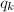和的第行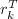.定义矩阵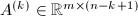为
因此,如果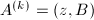,则有
随后计算外积
并进行下一步.这样我们就完成了对MGS算法第步的描述.这一算法共需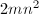个flop.但MGS的缺点在于病态时,不能保证良好的正交性.故仅当在被正交化的向量独立性很强时,才可用MGS求正交基.
满秩的最小二乘问题
要求找到向量 使
使 ,其中
,其中 和
和 .若,即方程个数多于未知数个数,则称方程组是超定 (overdeterminant) 的,通常这样的方程组没有严格解.在实际中,我们考虑对适当选取的
.若,即方程个数多于未知数个数,则称方程组是超定 (overdeterminant) 的,通常这样的方程组没有严格解.在实际中,我们考虑对适当选取的 ,极小化.不同的范数给出不同的最优解,其中应用较多的是
,极小化.不同的范数给出不同的最优解,其中应用较多的是 的情形.其中,2-范数情形便于解析求解.此时,该问题称为最小二乘(Least Square,LS)问题.
的情形.其中,2-范数情形便于解析求解.此时,该问题称为最小二乘(Least Square,LS)问题.
容易证明,若是列满秩的,则存在唯一的LS解 ,它是对称正定线性方程组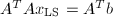的解,这一方程组称为法方程组.称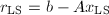为最小剩余,用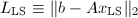表示其大小.
,它是对称正定线性方程组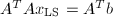的解,这一方程组称为法方程组.称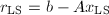为最小剩余,用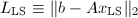表示其大小.
当评估一个LS解的质量时,常考虑两方面的问题:
- 有多靠近?
- 与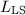相比,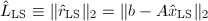有多小?
这两条标准在实际应用中常要考虑.
法方程组方法
这一算法基于许多标准算法,共需要个flop.经过分析,该算法计算解的精度依赖于的条件数的平方:
其中 为的条件数.
为的条件数.
用分解求解LS问题
设,且给定.若以计算得到的分解
其中 是上三角阵.记
则
于是,由三角方程组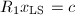定义,且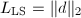.于是,只要求得的分解,LS问题就很容易了.如采用Householder算法求得的分解,则求解满秩LS问题,共需个flop.
是上三角阵.记
则
于是,由三角方程组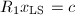定义,且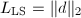.于是,只要求得的分解,LS问题就很容易了.如采用Householder算法求得的分解,则求解满秩LS问题,共需个flop.
经分析,这种方法在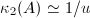时失败.事实上,其解的灵敏性大致与 成正比.因此,分解的方法适用范围比法方程组方法大一些.
成正比.因此,分解的方法适用范围比法方程组方法大一些.
基于MGS以及快速Givens方法的分解也可用于求解LS问题,且解的稳定性相当.
病态矩阵的正交分解
如果是秩亏损的,则分解不一定能给出 的一组正交基.这问题可通过计算经过置换后的的分解来解决,即,其中是置换阵.
的一组正交基.这问题可通过计算经过置换后的的分解来解决,即,其中是置换阵.
如果右乘一个一般正交阵 ,中的数据可被进一步压缩
,中的数据可被进一步压缩 .和的选取以及相应的列主元的分解正是本节要讨论的.
.和的选取以及相应的列主元的分解正是本节要讨论的.
选主列的分解
设 且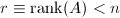,则分解不一定产生
且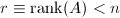,则分解不一定产生 的一组正交基.但通过简单的修改,即计算分解
其中为正交矩阵,为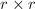非奇异的上三角矩阵.于是的前
的一组正交基.但通过简单的修改,即计算分解
其中为正交矩阵,为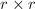非奇异的上三角矩阵.于是的前 列给出的正交基.
列给出的正交基.
和分别是Householder矩阵和初等置换阵之积.假定对某个,我们已计算了Householder矩阵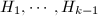和置换阵使得
其中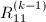为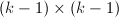阶非奇异上三角阵.假定
且令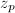为其中2-范数最大者.注意若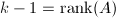,则该最大模是,计算至此结束.否则,令是互换第列和第列的置换阵,并确定Householder矩阵使有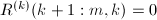.换句话说,把最大列移到前面,把它的非对角元化为.
利用对正交阵
的性质,我们只需修正旧的列范数得到新的列范数,即
 从而使选主列的工作量从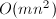减少到.这样,我们就完成了对该算法的描述.
从而使选主列的工作量从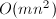减少到.这样,我们就完成了对该算法的描述.
本算法共需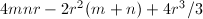个flop,其中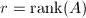.正交矩阵可以以因子形式存储与的对角线之下.
完全正交分解
如果对上述算法产生的 ,从右边用一组适当的Householder矩阵相乘,则它可以进一步缩小.具体地说,我们可通过列满秩的分解来计算
其中,
,从右边用一组适当的Householder矩阵相乘,则它可以进一步缩小.具体地说,我们可通过列满秩的分解来计算
其中, 为Householder变换,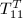是上三角矩阵,于是有
其中,.我们称其为完全正交分解.在这种情况下,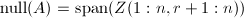.
为Householder变换,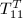是上三角矩阵,于是有
其中,.我们称其为完全正交分解.在这种情况下,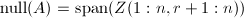.
双对角化
矩阵的双对角化即通过正交变换将矩阵化为上双对角形 (上带宽为一的带状阵).的双对角化与 的三对角化密切相关.通过对双对角阵
的三对角化密切相关.通过对双对角阵 的迭代运算,可以得到的奇异值分解(SVD).我们将其放在"对称特征值问题"一章中讨论.
的迭代运算,可以得到的奇异值分解(SVD).我们将其放在"对称特征值问题"一章中讨论.
假定且.我们要计算正交阵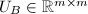和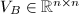使
其中,为上双对角阵,即上带宽为.很容易通过直接的Householder变换,使
其中,算法进行的第步,将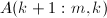化为,而将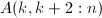化为.本算法共需 个flop.
个flop.
当 时,若在进行双对角化之前先进行上三对角化,则可得到一个更为快速的双对角化算法,称为R双对角化.具体地说,假定我们计算一个正交阵使得
是上三角阵.然后对进行双对角化
则
而
是的双对角化.它需要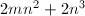个flop.可以看出,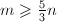时,它的计算量要少一些.
时,若在进行双对角化之前先进行上三对角化,则可得到一个更为快速的双对角化算法,称为R双对角化.具体地说,假定我们计算一个正交阵使得
是上三角阵.然后对进行双对角化
则
而
是的双对角化.它需要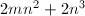个flop.可以看出,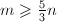时,它的计算量要少一些.
秩亏损的LS问题
当是秩亏损的,则LS问题就有无穷多个解.可以证明,所有极小解的集合: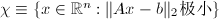是凸集,从而存在唯一元素具有极小2-范数,记为.
完全正交分解,SVD与
任何完全正交分解都可用来计算.设
为的完全正交分解,其中 为上三角矩阵,
为上三角矩阵, 为的秩.则
其中
于是
为的秩.则
其中
于是
SVD是非常"显露"的完全正交分解,当然可以用它来计算,并有以下定理,它提供了的一个简洁表达式和最小剩余量的范数.
 的SVD,且.如果,
的SVD,且.如果,![$V=[v_1,\cdots,v_n]$](./latex/latex2png-QRLS_223557911_-5.gif) 是按列划分的,.则
使与的广义逆矩阵有如下关系:
是按列划分的,.则
使与的广义逆矩阵有如下关系:
设
是的SVD,则的广义逆(又称Moore-Penrose广义逆或加号广义逆)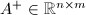为
其中
则
且
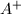是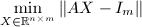的唯一的最小Frobenius范数解.
LS问题在秩亏损时变得相当困难,甚至不是中元素的的连续函数.和 的微小变化可能引起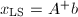的任意大的变化.
的微小变化可能引起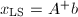的任意大的变化.
选主列的分解与基本解
假定秩为,选主列的分解给出
 其中
为满秩上三角阵.则对任意有
其中
于是,若是一个极小解,则有
若取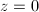,则得到所谓基本解
可以看到,至多只有个非零分量.但除非,基本解一般不是最小2-范数解.
其中
为满秩上三角阵.则对任意有
其中
于是,若是一个极小解,则有
若取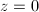,则得到所谓基本解
可以看到,至多只有个非零分量.但除非,基本解一般不是最小2-范数解.
欠定方程组的LS解
当 时,我们称线性方程组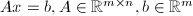是欠定的(underdetermined),它要么无解,要么有无穷多解.我们希望求出它的最小2-范数解.以下我们先讨论系数矩阵行满秩情形的算法,随后对秩亏损(但非矛盾)的情形加以考察.本节的讨论主要来自[1].
时,我们称线性方程组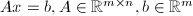是欠定的(underdetermined),它要么无解,要么有无穷多解.我们希望求出它的最小2-范数解.以下我们先讨论系数矩阵行满秩情形的算法,随后对秩亏损(但非矛盾)的情形加以考察.本节的讨论主要来自[1].
广义逆
设欠定方程组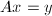,其中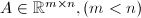为行满秩的系数矩阵.于是 矩阵
矩阵 非奇异,且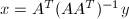正是方程组的最小2-范数解,其中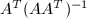是的Moore-Penrose广义逆.
非奇异,且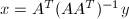正是方程组的最小2-范数解,其中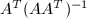是的Moore-Penrose广义逆.
一个直接的算法是显式形成,用Cholesky分解或分解求解得到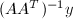.但误差理论指出,若显式计算,因条件数增大 (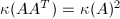) 可能会造成精度的严重丢失.因而这种方法并不可取.
 分解
分解
分解得到,其中 ,
, 为置换矩阵,
为置换矩阵, 为的单位下三角阵,
为的单位下三角阵, 为的的非奇异对角阵,
为的的非奇异对角阵, 为的单位上梯形阵.则的最小2-范数解可由以下步骤求出:
为的单位上梯形阵.则的最小2-范数解可由以下步骤求出:
- 计算分解.
- 由向前消去法求下三角方程的解.
- 计算的最小2-范数解,其详细做法将随后叙述.
- 取,即要求的最小2-范数解.
在计算分解时,只借助行选主元也能保证计算的稳定性,同时能够大大减少比较的次数.
的计算可以通过显式形成来进行,因是单位上梯形阵,其条件数会小于 .以下还会介绍其他的方法.
.以下还会介绍其他的方法.
正交分解法
通过运用Householder变换或MGS对系数矩阵进行选主元的分解 (即分解的列形式,其中是正交列),得到
其中为单位下三角阵,为的矩阵满足为非奇异的对角阵.则最小2-范数解
其中 满足.
满足.
消去法
最小二乘解也可通过如下的正交分解过程得到.
消去与投影法
我们考虑一个直接构造欠定方程组的最小2-范数解的方法.注意到方程组的所有解的都可表为
其中,且与 互为正交补.故
从而
是到的正交投影.于是我们采用下述步骤就可得到:
互为正交补.故
从而
是到的正交投影.于是我们采用下述步骤就可得到:
- 求出方程组的任意非零解.
- 求得的一组正交基
 .记.
.记. - 做正交投影
下面具体说明:
- 做分解
记,其中
 为上三角阵.令
则
为上三角阵.令
则 为方程组的一个解,可通过两次消去法得到.
为方程组的一个解,可通过两次消去法得到. - 由于,故向量当且仅当.于是我们只要计算的一组正交基.首先注意到通过对
实施向后消去法,即可得到
其中为任意取定的维非零向量.得到
 后,通过(非选主元的)Gauss消去法将
后,通过(非选主元的)Gauss消去法将
 化为上梯形阵(实际只要对最后一行实施初等变换)
而后求得
的解
化为上梯形阵(实际只要对最后一行实施初等变换)
而后求得
的解 .类似可依次由得到.在此过程中一般地要进行后列的交换.记
则
.类似可依次由得到.在此过程中一般地要进行后列的交换.记
则
- 计算 令
秩亏损情形
在为行不满秩且方程组不矛盾时,我们称之为秩亏损情形.设为秩的矩阵,且有分解
其中为单位下梯形阵,为对角阵, 为单位上梯形阵.记
其中为下三角阵,则可化为等价的
其中可通过向后消去法求解
得到
其中表示的前维分量.这样原方程组就化为
可通过之前的方法求解.
为单位上梯形阵.记
其中为下三角阵,则可化为等价的
其中可通过向后消去法求解
得到
其中表示的前维分量.这样原方程组就化为
可通过之前的方法求解.
综合考虑算法的稳定性与复杂度,一般认为基于Householder变换的正交分解法较好,而投影方法在 略小于
略小于 时较为快速.
时较为快速.
广义最小二乘问题
若已知,,,要求使
其中,这一类问题通常称为广义最小二乘问题.Paige (1979)[2]在假定,为满秩的情况下,提出了如下算法:
 :
而其上半部确定了
:
而其上半部确定了参考文献
[1]L2-Solution to Underdetermined Linear Systems, SIAM Review 18 (1976), 92-106.
[2]Computer Solution and Perturbation Analysis of Generalized Least Squares Problems, Math. Comp. 33 (1979), 171-184.